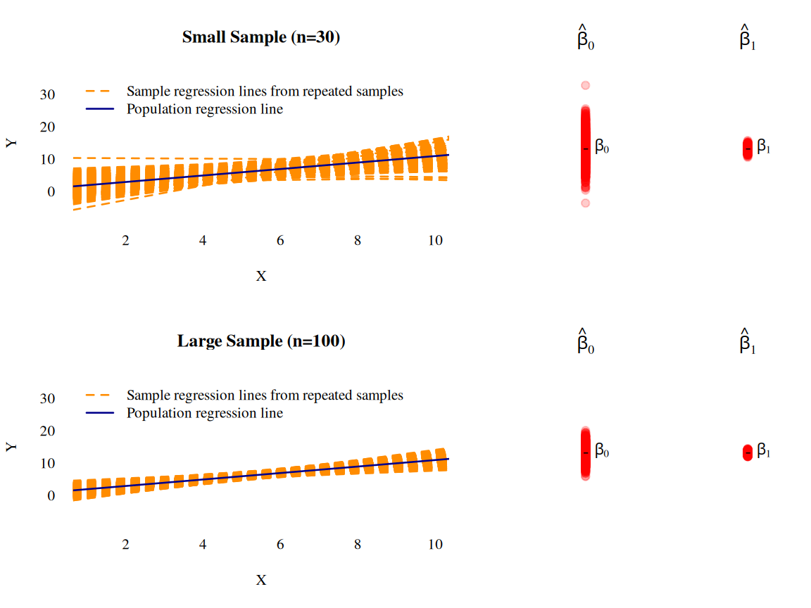

# Some given data
X_2 <- c(1.9,0.8,1.1,0.1,-0.1,4.4,4.6,1.6,5.5,3.4)
X_3 <- c(66, 62, 64, 61, 63, 70, 68, 62, 68, 66)
Y <- c(0.7,-1.0,-0.2,-1.2,-0.1,3.4,0.0,0.8,3.7,2.0)
dataset <- data.frame("X_2" = X_2, "X_3" = X_3, "Y" = Y)
## Compute the OLS estimation
lmobj <- lm(Y ~ X_2 + X_3, data = dataset)
## Plot sample regression surface
library("scatterplot3d") # library for 3d plots
plot3d <- scatterplot3d(x = X_2, y = X_3, z = Y,
angle = 33, scale.y = 0.8, pch = 16,
color ="red",
xlab = expression(X[2]),
ylab = expression(X[3]),
main ="OLS Regression Surface")
plot3d$plane3d(lmobj, lty.box = "solid", col=gray(.5), draw_polygon=TRUE)5 Multiple Linear Regression
\[ \require{color} %% Colorbox within equation-environments: \newcommand{\highlight}[2][yellow]{\mathchoice% {\colorbox{#1}{$\displaystyle#2$}}% {\colorbox{#1}{$\displaystyle#2$}}% {\colorbox{#1}{$\displaystyle#2$}}% }% \]
In the following we focus on the case of random designs \(X\) (i.e. \(X\) being a random variable), since
- this is the more relevant case in econometrics and
- it includes the case of fixed designs (i.e. \(X\) being deterministic) as a special case (“degenerated random variable”).
Caution: A random \(X\) requires us to consider conditional means and variances given \(X.\) That is, if we were able to resample from the population (from the data-generating process), we would do so by fixing (conditioning on) the observed \(X_{obs}\) and generating new realizations of all other random quantities involved.
5.1 Assumptions
The multiple linear regression model is defined by the following assumptions which together describe the relevant theoretical aspects of the underlying data generating process:
Assumption 1: Model and Sampling
Part (a): Linear Model
\[ \begin{align} Y_i=\sum_{k=1}^K\beta_k X_{ik}+\varepsilon_i, \quad i=1,\dots,n. \end{align} \qquad(5.1)\] Usually, a constant (intercept) is included, in this case \(X_{i1}=1\) for all \(i=1,\dots,n.\) In the following we will always assume that \(X_{i1}=1\) for all \(i\), unless otherwise stated.
- \(Y_i\) is called “dependent variable” or “outcome variable” or “regressand”.
- \(X_{ik}\) is called the \(k\)th “independent variable” or “predictor variable” or “regressor” or “explanatory variable” or “control variable.”
- \(\varepsilon_i\) denotes the statistical error term.
It is convenient to write Equation 5.1 using matrix notation \[ \begin{eqnarray*} Y_i&=&\underset{(1\times K)}{X_i'}\underset{(K\times 1)}{\beta} +\varepsilon_i, \quad i=1,\dots,n, \end{eqnarray*} \] where \[ X_i=\left(\begin{matrix}X_{i1}\\ \vdots\\ X_{iK}\end{matrix}\right) \quad\text{and}\quad \beta=\left(\begin{matrix}\beta_1\\ \vdots\\ \beta_K\end{matrix}\right). \] Stacking all individual rows \(i=1,\dots,n\) leads to \[ \begin{eqnarray*}\label{LM} \underset{(n\times 1)}{Y}&=&\underset{(n\times K)}{X}\underset{(K\times 1)}{\beta} + \underset{(n\times 1)}{\varepsilon}, \end{eqnarray*} \] where \[ \begin{equation*} Y=\left(\begin{matrix}Y_1\\ \vdots\\Y_n\end{matrix}\right),\quad X=\left(\begin{matrix}X_{11}&\dots&X_{1K}\\\vdots&\ddots&\vdots\\ X_{n1}&\dots&X_{nK}\\\end{matrix}\right),\quad\text{and}\quad \varepsilon=\left(\begin{matrix}\varepsilon_1\\ \vdots\\ \varepsilon_n\end{matrix}\right). \end{equation*} \]
Simple Linear Regression and Polynomial Regression Model
The special case of \(K=2\) \[ Y_i = \beta_1 + \beta_2 X_{i2} + \varepsilon_i \] is called the simple linear regression model. With the simple linear regression model, only straight line fits are possible.
By contrast, with the multiple linear regression model, we can also fit polynomials. For instance, we can define \[
X_{i3} := X_{i2}^2
\] which leads to a quadratic regression model (often used for life-cycle analyses that include the predictor Age\(_i=X_{i2}\)) \[
Y_i = \beta_1 + \beta_2 X_{i2} + \beta_3 X_{i2}^2 + \varepsilon_i.
\] Of course, further predictor variables \(X_{i3},\dots,X_{iK}\) can (and should) be added to this model.
The same logic applies to polynomials with higher polynomial degrees \((\geq 2).\) Large polynomial degrees, however, can lead to unstable estimation results.
Part (b): Random Sample
Moreover, we assume that the observed (“obs”) data points \[ ((Y_{1,obs},X_{11,obs},\dots,X_{1K,obs}),(Y_{2,obs},X_{21,obs},\dots,X_{2K,obs}),\dots,(Y_{n,obs},X_{n1,obs},\dots,X_{nK,obs})) \] are a realization of the random sample \[ ((Y_{1},X_{11},\dots,X_{1K}),(Y_{2},X_{21},\dots,X_{2K}),\dots,(Y_{n},X_{n1},\dots,X_{nK})). \]
That is, the \(i\)th observed \(K+1\) dimensional data point \[(Y_{i,obs},X_{i1,obs},\dots,X_{iK,obs})\in\mathbb{R}^{K+1} \] is a realization of a \(K+1\) dimensional random variable \[ (Y_{i},X_{i1},\dots,X_{iK})\in\mathbb{R}^{K+1}, \] where
- \((Y_{i},X_{i1},\dots,X_{iK})\) has the identical \(K+1\) dimensional distribution for all \(i=1,\dots,n.\)
- \((Y_{i},X_{i1},\dots,X_{iK})\) is independent of \((Y_{j},X_{j1},\dots,X_{jK})\) for all \(i\neq j=1,\dots,n.\)
Note
Due to Equation 5.1, this i.i.d. assumption is equivalent to assuming that the multivariate random variables \[ (\varepsilon_i,X_{i1},\dots,X_{iK})\in\mathbb{R}^{K+1} \] are i.i.d. across \(i=1,\dots,n\).
Caution
Remark: Usually, we do not use a different notation for observed realizations \((Y_{i,obs},X_{i1,obs},\dots,X_{iK,obs})\in\mathbb{R}^{K+1}\) and for the corresponding random variable \((Y_{i},X_{i1},\dots,X_{iK})\in\mathbb{R}^{K+1}\) since often both interpretations (random variable and its realizations) can make sense in the same statement and then it depends on the considered context whether the random variables point if view or the realization point of view applies.
Assumption 2: Exogeneity \[ E(\varepsilon_i|X_i)=0,\quad i=1,\dots,n \qquad(5.2)\] This assumption demands that the mean of the random error term \(\varepsilon_i\) is zero irrespective of the realizations of \(X_i\). This exogeneity assumption is also called
- “orthogonality assumption” or
- “mean independence assumption.”
Note
Together with the random sample assumption (Assumption 1, Part (b)) Equation 5.2 even implies strict exogeneity \[ E(\varepsilon|X) = \underset{(n\times 1)}{0} \] since we have independence across \(i=1,\dots,n\). Under strict exogeneity, the mean of the random vector \(\varepsilon\) is zero irrespective of the realizations of the \((n\times K)\)-dimensional random predictor matrix \(X.\)
Assumption 3: Rank Condition (no perfect multicollinearity)
\[ \begin{align*} \operatorname{rank}(X)&=K\quad\text{a.s.}\\ \Leftrightarrow P\big(\operatorname{rank}(X)&=K\big)=1 \end{align*} \] This assumption demands that, with probability one, no predictor variable \(X_{k}\in\mathbb{R}^n\) is linearly dependent of the others. (This is the literal translation of the “almost surely (a.s.)” concept.)
Note: The assumption implies that \(n\geq K,\) since \[ \operatorname{rank}(X)\leq \min\{n,K\}\quad(a.s.) \]
This rank assumption is a bit dicey and its violation belongs to one of the classic problems in applied econometrics (keywords: dummy variable trap, multicollinearity, variance inflation). The violation of this assumption harms any economic interpretation since we cannot disentangle the explanatory variables’ individual effects on \(Y\). Therefore, this assumption is also often called an identification assumption.
Tip
Under Assumption 3, we have that \(\operatorname{rank}(X)=K\) (a.s.)
This implies that the \((K\times K)\)-dimensional matrix \(X'X\) has full rank, i.e. that \[ \operatorname{rank}(X'X)=K\quad\text{(a.s.)} \]
Thus \((X'X)\) is invertible; i.e. there exists a \((K\times K)\)-dimensional matrix \((X'X)^{-1}\) such that \[ (X'X)(X'X)^{-1} = (X'X)^{-1}(X'X) = I_K. \]
Assumption 4: Error distribution
Depending on the context (i.e., parameter estimation vs. hypothesis testing and small \(n\) vs. large \(n\)) there are different more or less restrictive assumptions. Some of the most common ones are the following:
-
Conditional distribution: \[
\varepsilon_i|X_i \sim f_{\varepsilon|X}
\] for all \(i=1,\dots,n\) and for any distribution \(f_{\varepsilon|X}\) with two (or more) finite moments.
- Example: Conditional normal distribution \[ \varepsilon_i|X_i \sim \mathcal{N}(0,\sigma^2(X_i)) \] for all \(i=1,\dots,n\).
-
Independence between error and predictors: \(\varepsilon_i\sim f_\varepsilon\) for all \(i=1,\dots,n\) such that \(f_\varepsilon=f_{\varepsilon|X}\) and such that \(f_\varepsilon\) has two (or more) finite moments.
- Example: Independence between Gaussian error and predictors \[ \varepsilon_i\sim \mathcal{N}(0,\sigma^2), \] where \(\sigma^2\) is independent of \(X.\)
-
Spherical errors (“Gauss-Markov assumptions”): The conditional distributions of \(\varepsilon_i|X_i\) may generally depend on \(X_i,\) but only such that \[
E(\varepsilon|X)=\underset{(n\times 1)}{0}
\] and \[
\begin{align*}
&\underset{(n\times n)}{Var\left(\varepsilon|X\right)}=\\[2ex]
& = \left(\begin{matrix}
Var(\varepsilon_1|X)&Cov(\varepsilon_1,\varepsilon_2|X)&\dots&Cov(\varepsilon_1,\varepsilon_n|X)\\
Cov(\varepsilon_2,\varepsilon_1|X)&Var(\varepsilon_2|X)&\dots&Cov(\varepsilon_2,\varepsilon_n|X)\\
\vdots&\vdots&\ddots&\vdots\\
Cov(\varepsilon_n,\varepsilon_1|X)&Cov(\varepsilon_n,\varepsilon_2|X)&\dots&Var(\varepsilon_n|X)
\end{matrix}\right)\\[2ex]
& = \left(\begin{matrix}
\sigma^2&0&\dots&0\\
0&\sigma^2&\dots&0\\
\vdots&\vdots&\ddots&\vdots\\
0&0&\dots&\sigma^2
\end{matrix}\right)
= \sigma^2 I_n,
\end{align*}
\] where \(I_n\) denotes the \((n\times n)\) identity matrix. Under the spherical errors assumption, one has, for all possible realizations of \(X\), that:
- uncorrelated: \[ Cov(\varepsilon_i,\varepsilon_j|X)=0 \] for all \(i=1,\dots,n\) and all \(j=1,\dots,n\) such that \(i\neq j\)
- homoskedastic: \[ Var(\varepsilon_i|X)=\sigma^2 \] for all \(i=1,\dots,n\)
Homoskedastic versus Heteroskedastic Error Terms
The i.i.d. assumption is not as restrictive as it may seem on first sight. It allows for dependence between \(\varepsilon_i\) and \((X_{i1},\dots,X_{iK})\in\mathbb{R}^K\). That is, the error term \(\varepsilon_i\) can have a conditional distribution which depends on \((X_{i1},\dots,X_{iK})\); see Section 2.2.2.5.
The exogeneity assumption (Assumption 2: Exogeneity) requires that the conditional mean of \(\varepsilon_i\) is independent of \(X_i\). Besides this, dependencies between \(\varepsilon_i\) and \(X_{i1},\dots,X_{iK}\) are allowed. For instance, the variance of \(\varepsilon_i\) can be a function of \(X_{i1},\dots,X_{iK}.\) If this is the case, \(\varepsilon_i\) is said to be “heteroskedastic.”
Example: \[ \varepsilon_i|X_i\sim U[-0.5|X_{i2}|, 0.5|X_{i2}|], \] with \[ X_{i2}\sim U[-4,4] \] for all \(i=1,\dots,n.\) This error term is mean independent of \(X_i\) since \(E(\varepsilon_i|X_i)=0,\) but it has a heteroskedastic conditional variance since \[ Var(\varepsilon_i|X_i)=\frac{1}{12}X_{i2}^2 \] depends on \(X_{i2}.\)
Sometimes, we need to be more restrictive by assuming that also the variances of the error terms \(\varepsilon_i\) are independent of \(X_i;\) for instance, to do small sample inference (see Chapter 6).
Example: \[ \varepsilon_i\sim{\mathcal N} (0, \sigma^2) \] for all \(i=1,\dots,n.\) Here, the conditional variance of the error terms \(\varepsilon_i\) given \(X_i\) \[ Var(\varepsilon_i|X_i)=Var(\varepsilon_i)=\sigma^2 \] are equal to the constant \(\sigma^2>0\) for all \(i=1,\dots,n\) and for every possible realization of \(X_i.\)
5.1.1 Some Implications of the Exogeneity Assumption (Ass 2)
Proof. Using the Law of Total Expectations (i.e., \(E[E(Z|X)]=E(Z)\)) we can rewrite \(E(\varepsilon_i)\) as \[ E(\varepsilon_i)=E[E(\varepsilon_i|X_i)] \] for all \(i=1,\dots,n.\) But the exogeneity assumption yields \[ E[E(\varepsilon_i|X_i)]=E[0]=0 \] for all \(i=1,\dots,n,\) which completes the proof. \(\square\)
Generally, two random variables \(X\) and \(Y\) are said to be orthogonal if their cross moment is zero, i.e. if \[ E(XY)=0. \] The exogeneity assumption (Assumption 2) is sometimes also called “orthogonality” assumption, due to the following result:
Proof. \[\begin{align*} E(X_{ik}\varepsilon_i) &=E(E(X_{ik}\varepsilon_i|X_{ik}))\quad{\text{(By the Law of Total Expectations)}}\\ &=E(X_{ik}E(\varepsilon_i|X_{ik}))\quad{\text{(By the linearity of cond. expectations)}} \end{align*}\] Now, to show that \(E(X_{ik}\varepsilon_i)=0\), we need to show that \(E(\varepsilon_i|X_{ik})=0,\) which is done in the following:
Since \(X_{ik}\) is an element of \(X_i,\) a slightly more sophisticated use of the Law of Total Expectations (i.e., \(E(Y|X)=E(E(Y|X,Z)|X)\)) implies that \[ E(\varepsilon_i|X_{ik})=E(E(\varepsilon_i|X_i)|X_{ik}). \] So, the exogeneity assumption, \(E(\varepsilon_i|X_i)=0\) yields \[ E(\varepsilon_i|X_{ik})=E(\underbrace{E(\varepsilon_i|X_i)}_{=0}|X_{ik})=E(0|X_{ik})=0. \] I.e., we have that \(E(\varepsilon_i|X_{ik})=0\) which allows us to conclude that \[ E(X_{ik}\varepsilon_i)=E(X_{ik}E(\varepsilon_i|X_{ik}))=E(X_{ik}0)=0 \] which completes the proof. \(\square\)
Because the mean of the error term is zero (\(E(\varepsilon_i)=0\) for all \(i\) (see Theorem 5.1), it follows that the orthogonality property, \(E(X_{ik}\varepsilon_i)=0,\) is equivalent to a zero correlation property.
Proof. \[\begin{eqnarray*} Cov(\varepsilon_i,X_{ik})&=&E(X_{ik}\varepsilon_i)-E(X_{ik})\,E(\varepsilon_i)\quad{\small\text{(Def. of Cov)}}\\[2ex] &&\text{By the mean zero result, $E(\varepsilon_i)=0,$ shown above:}\\[2ex] &=&E(X_{ik}\varepsilon_i)\\[2ex] &&\text{By the orthogonality result shown above:}\\[2ex] &=&0\quad\square \end{eqnarray*}\]
5.2 Deriving the Estimator \(\hat\beta\)
5.2.1 Least Squares Approach
We derive the expression for the OLS estimator \[ \hat\beta=\begin{pmatrix}\hat\beta_1\\\vdots\\\hat\beta_K\end{pmatrix}\in\mathbb{R}^K \] as the vector-valued minimizing argument of the sum of squared residuals, \[ S_n(b)=\sum_{i=1}^n\big(\underbrace{Y_i-X_i'b}_{\text{$i$th residual}}\big)^2 \] with \(b\in\mathbb{R}^K.\)
Using matrix/vector notation we can write \(S(b)\) as \[ \begin{align*} S_n(b) &=\sum_{i=1}^n(Y_i-X_i'b)^2\\[2ex] &=(Y-X b)^{\prime}(Y-X b)\\[2ex] &=Y^{\prime}Y-2 Y^{\prime} X b+b^{\prime} X^{\prime} X b. \end{align*} \] To find the minimizing argument \[ \hat\beta=\arg\min_{b\in\mathbb{R}^K}S_n(b) \] we compute the vector containing all partial derivatives \[ \begin{aligned} \underset{(K\times 1)}{\frac{\partial S(b)}{\partial b}} &=-2\left(X^{\prime}Y -X^{\prime} Xb\right). \end{aligned} \] Setting each partial derivative to zero leads to \(K\) linear equations (“normal equations”) in \(K\) unknowns. This system of linear equations defines the OLS estimator, \(\hat{\beta}.\) \[ \begin{align*} -2\left(X^{\prime}Y -X^{\prime} X\hat{\beta}\right) &=\underset{(K\times 1)}{0}\\[2ex] \Leftrightarrow\qquad X^{\prime} X\hat{\beta} &=\underset{(K\times 1)}{X^{\prime}Y}. \end{align*} \qquad(5.3)\] From our rank assumption (Assumption 3) it follows that \(X^{\prime}X\) is an invertible \((K\times K)\)-dimensional matrix which allows us to solve the equation system in Equation 5.3 by \[ \begin{aligned} \underset{(K\times 1)}{\hat{\beta}} &=\left(X^{\prime} X\right)^{-1} X^{\prime} Y. \end{aligned} \]
The following codes computes the estimate \(\hat{\beta}\) for a given dataset with \(X_i\in\mathbb{R}^K\), \(K=3\).
5.2.2 Method of Moments Estimator Approach
Remember that the exogeneity assumption (Assumption 2), \[ E(\varepsilon_i|X_i)=0, \] implies that \[ E(X_{ik}\varepsilon_i)=0\quad\text{for all}\quad k=1,\dots,K. \] Thus, the exogeneity assumption (Assumption 2) gives us a system of \(K\) linear equations: \[ \left. \begin{array}{c} E(\varepsilon_i)=0\\ E(X_{i2}\varepsilon_i)=0\\ \vdots\\ E(X_{iK}\varepsilon_i)=0 \end{array} \right\}\Leftrightarrow \underset{(K\times 1)}{E(X_i\varepsilon_i)}=\underset{(K\times 1)}{0} \]
This linear equation system in terms of population moments (means) \[ \underset{(K\times 1)}{E(X_i\varepsilon_i)}=\underset{(K\times 1)}{0} \] allows us to identify the unknown (true) parameter vector \(\beta\in\mathbb{R}^K\) in terms of population moments: \[ \begin{align*} E(X_i\varepsilon_i) & = 0 \\[2ex] E(X_i(\overbrace{Y_i - X_i'\beta}^{=\varepsilon_i})) &= 0\\[2ex] %\Leftrightarrow \hspace{1.5cm} E(X_iY_i) - E(X_iX_i')\beta & = 0\\[2ex] E(X_iX_i')\beta & = E(X_iY_i) \\[2ex] \beta & = \left(E(X_iX_i')\right)^{-1} E(X_iY_i) \end{align*} \] The fundamental idea behind method of moments estimation is to define an estimator by substituting population moments by sample moment analogues (sample means): \[ \begin{align*} \hat\beta_{mm} & = \left(\frac{1}{n}\sum_{i=1}^n X_iX_i'\right)^{-1} \frac{1}{n}\sum_{i=1}^n X_iY_i, \end{align*} \qquad(5.4)\] where \[ \begin{align*} E(X_iX_i') & \quad \text{is substituted by}\quad \frac{1}{n}\sum_{i=1}^n X_iX_i'\\[2ex] E(X_iY_i) & \quad \text{is substituted by}\quad \frac{1}{n}\sum_{i=1}^n X_iY_i. \end{align*} \]
Note that Equation 5.4 can be further simplified as following: \[ \begin{align*} \hat\beta_{mm} & = \left(\frac{1}{n}\sum_{i=1}^n X_iX_i'\right)^{-1} \frac{1}{n}\sum_{i=1}^n X_iY_i \\ & = \left(\sum_{i=1}^n X_iX_i'\right)^{-1} \sum_{i=1}^n X_iY_i\\ & = \left(X'X\right)^{-1} X'Y.\\ \end{align*} \] Thus the method of moments estimator, \(\hat\beta_{mm},\) coincides with the OLS estimator \(\hat\beta\) as derived above.
5.2.3 Method of Moments versus Least Squares Estimation
The method of moments estimation approach, firstly, checks whether the parameter of interest, \(\beta,\) is identified; i.e., whether \(\beta\) can be written in terms of population moments of observables \[ \beta = \left(E(X_iX_i')\right)^{-1} E(X_iY_i), \qquad(5.5)\] where the identification result of Equation 5.5 only holds under Assumption 2 (exogeneity). The identified parameter \(\beta\) is then estimated using the simple method of moments idea of substituting population moments by sample moments.
Note: If Assumption 2 (exogeneity) is violated, then we generally have that \[ \beta \neq \tilde \beta = \left(E(X_iX_i')\right)^{-1} E(X_iY_i). \]
The derivation of the OLS estimator \[ \begin{align*} \hat\beta & = \left(X'X\right)^{-1} X'Y\\[2ex] & = \left(\frac{1}{n}\sum_{i=1}^n X_iX_i'\right)^{-1} \frac{1}{n}\sum_{i=1}^n X_iY_i \\ & = \underbrace{\left(\sum_{i=1}^n X_iX_i'\right)^{-1}}_{\approx (E(X_iX_i'))^{-1}} \; \underbrace{\sum_{i=1}^n X_iY_i}_{\approx E(X_iY_i)} \end{align*} \] does not require a check whether \(\beta\) is actually identified. By the law of large numbers (sample means converge in probability to population means; see Chapter 7), the OLS estimator is a consistent estimator of \(\tilde\beta,\) \[ \begin{align*} \hat\beta \to_p \tilde\beta = (E(X_iX_i'))^{-1} E(X_iY_i) \quad \text{as}\quad n\to\infty. \end{align*} \]
That is, the OLS estimator will estimate the parameter of interest \(\beta\) only if
\[
\beta = \tilde \beta = \left(E(X_iX_i')\right)^{-1} E(X_iY_i);
\] i.e. only if \(\beta\) is identified.
Without identification, the OLS estimator estimates \(\tilde\beta,\) but generally not our parameter of interest \(\beta.\)
Summary: So, at the end, both estimation approaches require that the parameter of interest, \(\beta,\) is identified. The method of moments estimation approach starts with checking the identification requirement and thus frames the identification requirement more prominently as what it is: a pre-request for consistent estimation of \(\beta.\)
5.3 Some Quantities of Interest
Predicted values and residuals.
- The (OLS) predicted values: \[ \hat{Y}_i=X_i'\hat\beta, \quad i=1,\dots,n \] The \((n\times 1)\) vector of predicted values \[ \begin{align*} \hat{Y} = \left(\begin{matrix}\hat{Y}_1\\\hat{Y}_2\\ \vdots\\ \hat{Y}_n\end{matrix}\right) &=X\hat{\beta}\\[-2ex] &=\underbrace{X(X'X)^{-1}X'}_{=P_X}Y\\[2ex] &=P_X Y \end{align*} \]
- The (OLS) residuals: \[ \hat\varepsilon_i=Y_i-\hat{Y}_i, \quad i=1,\dots,n \] The \((n\times 1)\) vector of residuals \[ \begin{align*} \hat{\varepsilon} = \left(\begin{matrix}\hat{\varepsilon}_1\\\hat{\varepsilon}_2\\ \vdots\\ \hat{\varepsilon}_n\end{matrix}\right) &= \left(\begin{matrix}Y_1\\[.5ex]Y_2\\[.5ex] \vdots\\[.5ex] Y_n\end{matrix}\right)- \left(\begin{matrix}\hat{Y}_1\\\hat{Y}_2\\ \vdots\\ \hat{Y}_n\end{matrix}\right)\\[2ex] &=Y - \hat{Y}\\[2ex] %&=Y - X\hat{\beta}\\[-2ex] %&=Y - \underbrace{X(X'X)^{-1}X'}_{=P_X}Y\\[2ex] &=Y - P_X Y\\[2ex] &=\underbrace{(I_n - P_X)}_{=M_X} Y\\[2ex] &=M_XY \end{align*} \]
Projection matrices.
The matrix \[ P_X=X(X'X)^{-1}X' \] is the \((n\times n)\) projection matrix that projects any vector from \(\mathbb{R}^n\) into the column space spanned by the column vectors of \(X\) and \[ M_X=I_n-X(X'X)^{-1}X'=I_n-P_X \] is the associated \((n\times n)\) orthogonal projection matrix that projects any vector from \(\mathbb{R}^n\) into the vector space that is orthogonal to that spanned by the column vectors of \(X.\)
The projection matrices \(P_X\) and \(M_X\) have some nice properties:
- \(P_X\) and \(M_X\) are symmetric, i.e. \[ P_X=P_X'\quad\text{ and }\quad M_X=M_X' \]
- \(P_X\) and \(M_X\) are idempotent, i.e. \[ P_XP_X=P_X\quad\text{ and }\quad M_X M_X=M_X \]
- Moreover, we have that
- \(X'P_X=X'\) and \(P_X X=X\)
- \(X'M_X=0\) and \(M_XX=0\)
- \(P_XM_X=0\) and \(M_XP_X=0\)
The properties (a)-(c) follow directly from the definitions of \(P_X\) and \(M_X\) (check it out).
Using properties (a)-(c), one can show that the residual vector \(\hat\varepsilon=(\hat\varepsilon_1,\dots,\hat\varepsilon_n)'\) is orthogonal to each of the column vectors in \(X\), i.e \[ \begin{eqnarray} X'\hat\varepsilon&=&X'M_XY\quad{\small\text{(By Def. of $M_X$)}}\\[2ex] \Leftrightarrow\;\; X'\hat\varepsilon&=&\underset{(K\times n)}{0}\underset{(n\times 1)}{Y}\quad{\small\text{(since $X'M_X=0$)}}\\[2ex] \Leftrightarrow\;\; X'\hat\varepsilon&=&\underset{(K\times 1)}{0}. \end{eqnarray} \qquad(5.6)\] Note that, in the case with intercept, Equation 5.6 implies that \[ \begin{align*} \sum_{i=1}^n 1\cdot \hat\varepsilon_i& = 0\\[2ex] \Leftrightarrow\;\;\underbrace{\frac{1}{n}\sum_{i=1}^n \hat\varepsilon_i}_{=\bar{\hat\varepsilon}} & = 0\\[2ex] \end{align*} \]
Moreover, the equation \(X'\hat\varepsilon=0\) implies also that the residual vector \(\hat{\varepsilon}\) is orthogonal to the predicted values vector, since \[ \begin{align*} X'\hat\varepsilon&=0\\ \Rightarrow\;\hat\beta'X'\hat\varepsilon&=\hat\beta'0\\ \Leftrightarrow\;\hat Y'\hat\varepsilon&=0. \end{align*} \]
Another insight from Equation 5.6 is that the vector \(\hat\varepsilon\) has to satisfy \(K\) linear restrictions which means we loose \(K\) degrees of freedom in the data. Consequently, the vector of residuals \(\hat\varepsilon\) has only \(n-K\) so-called degrees of freedom. This loss of \(K\) degrees of freedom also appears in the definition of the unbiased variance estimator \[ s_{UB}^2=\frac{1}{n-K}\sum_{i=1}^n\hat\varepsilon_i^2. \]
Note
The \(K\) linear restrictions follow from the fact that \[
X'\hat\varepsilon=\underset{(K\times 1)}{0}
\] is a linear system of \(K\) equations. That is, for each \(k=1,\dots,K\) the residuals \(\hat\varepsilon_1,\dots,\hat\varepsilon_n\) need to fulfill the equation
\[
\sum_{i=1}^nX_{ik}\hat\varepsilon_i=0.
\]
Variance decomposition: A further useful result that can be shown using the properties of \(P_X\) and \(M_X\) is that \(Y'Y=\hat{Y}'\hat{Y}+\hat\varepsilon'\hat\varepsilon\), i.e. \[\begin{eqnarray*} Y'Y&=&(\hat Y+\hat\varepsilon)'(\hat Y+\hat\varepsilon)\notag\\ &=&(P_XY+M_XY)'(P_XY+M_XY)\notag\\ &=&(Y'P_X'+Y'M_X')(P_XY+M_XY)\notag\\ &=&Y'P_X'P_XY+Y'M_X'M_XY+0\notag\\ &=&\hat{Y}'\hat{Y}+\hat\varepsilon'\hat\varepsilon \end{eqnarray*}\] The decomposition \[ \hat{Y}'\hat{Y}+\hat\varepsilon'\hat\varepsilon \] is the basis for the well-known variance decomposition result for OLS regressions.
Proof. From equation \(X'\hat\varepsilon=0\) we have for regressions with intercept that \(\sum_{i=1}^n\hat\varepsilon_i=0\). Hence, from \(Y_i=\hat{Y}_i+\hat\varepsilon_i\) it follows that \[\begin{eqnarray*} \frac{1}{n}\sum_{i=1}^n Y_i&=&\frac{1}{n}\sum_{i=1}^n \hat{Y}_i+\frac{1}{n}\sum_{i=1}^n \hat\varepsilon_i\\ \bar{Y}&=&\bar{\hat{Y}}+0 \end{eqnarray*}\]
Using the decomposition \(Y'Y=\hat{Y}'\hat{Y}+\hat\varepsilon'\hat\varepsilon\), we can now derive the result: \[\begin{eqnarray*} Y'Y&=&\hat{Y}'\hat{Y}+\hat\varepsilon'\hat\varepsilon\\ Y'Y-n\bar{Y}^2&=&\hat{Y}'\hat{Y}-n\bar{Y}^2+\hat\varepsilon'\hat\varepsilon\\ Y'Y-n\bar{Y}^2&=&\hat{Y}'\hat{Y}-n\bar{\hat{Y}}^2+\hat\varepsilon'\hat\varepsilon\quad\text{(by $\bar{Y}=\bar{\hat{Y}}$)}\\ \sum_{i=1}^nY_i^2-n\bar{Y}^2&=&\sum_{i=1}^n\hat{Y}_i^2-n\bar{\hat{Y}}^2+\sum_{i=1}^n\hat\varepsilon_i^2\\ \sum_{i=1}^n(Y_i-\bar{Y})^2&=&\sum_{i=1}^n(\hat{Y}_i-\bar{\hat{Y}})^2+\sum_{i=1}^n\hat\varepsilon_i^2\quad\square\\ \end{eqnarray*}\]
Coefficients of determination: \(R^2\) and \(\overline{R}^2\)
The larger the proportion of the explained variance, the better is the fit of the model. This motivates the definition of the so-called \(R^2\) coefficient of determination: \[\begin{eqnarray*} R^2=\frac{\sum_{i=1}^n\left(\hat{Y}_i-\bar{\hat{Y}}\right)^2}{\sum_{i=1}^n\left(Y_i-\bar{Y}\right)^2}\;=\;1-\frac{\sum_{i=1}^n\hat{\varepsilon}_i^2}{\sum_{i=1}^n\left(Y_i-\bar{Y}\right)^2} \end{eqnarray*}\]
Obviously, we have that \(0\leq R^2\leq 1\).
The closer \(R^2\) lies to \(1\), the better is the fit of the model to the observed data.
Caution
A high/low \(R^2\) value only means that the predictors have high/low predictive power.
A high/low \(R^2\) does not mean a validation/falsification of the estimated model. Any econometric model needs a plausible explanation from relevant economic theory.
The most often criticized disadvantage of the \(R^2\) is that additional regressors (relevant or not) will increase the \(R^2\). The below
R-codes demonstrates this problem.
set.seed(123)
n <- 100 # Sample size
X <- runif(n, 0, 10) # Relevant X variable
X_ir <- runif(n, 5, 20) # Irrelevant X variable
error <- rt(n, df = 10)*10 # True error
Y <- 1 + 5 * X + error # Y variable
lm1 <- summary(lm(Y~X)) # Correct OLS regression
lm2 <- summary(lm(Y~X+X_ir))# OLS regression with X_ir
lm1$r.squared < lm2$r.squared[1] TRUESo, \(R^2\) increases here even though X_ir is a completely irrelevant explanatory variable.
Because of this, the \(R^2\) cannot be used as a criterion for model selection. Possible solutions are given by penalized criterions such as the so-called adjusted \(R^2\), \(\overline{R}^2,\) defined as \[\begin{eqnarray*} \overline{R}^2&=&1-\frac{\frac{1}{n-K}\sum_{i=1}^n\hat{\varepsilon}^2_i}{\frac{1}{n-1}\sum_{i=1}^n\left(Y_i-\bar{Y}\right)^2}\leq R^2%\\ %=\dots= %&=&1-\frac{n-1}{n-K}\left(1-R^2\right)\quad{\small\text{(since $1-R^2=(\sum_i\hat\varepsilon_i^2)/(\sum_i(Y_i-\bar{Y}))$)}}\\ %&=&1-\frac{n-1}{n-K}+\frac{n-1}{n-K}R^2\quad+\frac{K-1}{n-K}R^2-\frac{K-1}{n-K}R^2\\ %&=&1-\frac{n-1}{n-K}+R^2\quad+\frac{K-1}{n-K}R^2\\ %&=&-\frac{K-1}{n-K}+R^2\quad+\frac{K-1}{n-K}R^2\\ %&=&R^2-\underbrace{\frac{K-1}{n-K}\left(1-R^2\right)}_{\geq 0\;\text{and}\;\leq(K-1)/(n-K)}\;\leq\;R^2 \end{eqnarray*}\] The adjustment is in terms of the degrees of freedom \(n-K\).
5.4 The Gauss-Markov Theorem
Showing linearity of \(\hat{\beta}\):
A function \(f(Y)\) is called linear in \(Y\in\mathbb{R}^n\) if for any two vectors \(Y_1\in\mathbb{R}^n\) and \(Y_2\in\mathbb{R}^n\) such that \(Y=Y_1+Y_2\) and for any scalar \(a\in\mathbb{R}\) \[ \begin{align*} f(Y_1+Y_2)&=f(Y_1)+f(Y_2)\\[2ex] f(aY)&=af(Y). \end{align*} \] This property applies to the OLS estimator \[ \hat\beta=f(Y)=(X'X)^{-1}X'Y \] since \[ \begin{align*} (X'X)^{-1}X'(Y_1+Y_2) & = (X'X)^{-1}X'Y_1 + (X'X)^{-1}X'Y_2 \end{align*} \] and \[ \begin{align*} (X'X)^{-1}X'aY & = a (X'X)^{-1}X'Y \end{align*} \] for any \(Y_1\) and \(Y_2\) such that \(Y=Y_1+Y_2\) and for any \(a\in\mathbb{R}.\)
Showing unbiasedness of \(\hat{\beta}\):
The OLS estimator is unbiased if \[
\operatorname{Bias}(\hat\beta) = E(\hat\beta) - \beta = 0
\] This can be shown as following: Observe that \[
\hat\beta=(X'X)^{-1}X'Y
\] consists of two multivariate random variables \(X\) and \(Y.\) Thus one needs to show first the conditional unbiasedness of \(\hat\beta\) given \(X\) which effectively allows us to focus on randomness due to \(\varepsilon,\)
\[
\begin{align*}
\operatorname{Bias}(\hat\beta|X)
&= E(\hat\beta|X) - \beta \\[2ex]
&= E((X'X)^{-1}X'\underbrace{Y}_{=X\beta+\varepsilon}|X) - \beta \\[2ex]
&= E((X'X)^{-1}X'(X\beta+\varepsilon)|X) - \beta \\[2ex]
&= E(\underbrace{(X'X)^{-1}X'X}_{=I_K}\beta|X) + E((X'X)^{-1}X'\varepsilon|X) - \beta \\[2ex]
&= \underbrace{E(\beta|X)}_{=\beta} + \underbrace{E((X'X)^{-1}X'\varepsilon|X)}_{=(X'X)^{-1}X'E(\varepsilon|X)} - \beta \\[2ex]
&= (X'X)^{-1}X'\underbrace{E(\varepsilon|X)}_{=0} =\underset{(K\times 1)}{0}
\end{align*}
\] Thus \(\hat\beta\) is unbiased conditionally on \(X.\) From this if follows, by the iterated law of expectations, that the OLS estimator is also unconditionally unbiased, i.e.
\[
\operatorname{Bias}(\hat\beta) = E\left(\operatorname{Bias}(\hat\beta|X)\right) = E(0) = 0.
\]
For the Gauss-Markov Theorem, we also need the conditional variance of \(\hat\beta\) given \(X,\) which can be derived as following: \[ \begin{align*} Var(\hat\beta|X) &=Var(\;\highlight{\hat\beta - \beta}\;|X)\\[2ex] &=Var((X'X)^{-1}X'\varepsilon|X), \end{align*} \] where we used that \[ \begin{align*} \hat\beta &=(X'X)^{-1}X'Y\\ &=(X'X)^{-1}X'(X\beta+\varepsilon)\\[2ex] &=\beta+(X'X)^{-1}X'\varepsilon\\[2ex] \Leftrightarrow \highlight{\hat\beta - \beta} & = \highlight{(X'X)^{-1}X'\varepsilon}. \end{align*} \]
Using the definition of the conditional variance (Definition 5.3) for multivariate random variables \((Z=(X'X)^{-1}X'\varepsilon)\) we have that \[ \begin{align*} &Var(\hat\beta|X)=\\[2ex] %&=Var(\hat\beta - \beta|X)\\[2ex] &=Var((X'X)^{-1}X'\varepsilon|X)\\[2ex] &=E\Big[\big((X'X)^{-1}X'\varepsilon-\underbrace{E((X'X)^{-1}X'\varepsilon|X)}_{=0}\big)\times\\[2ex] &\phantom{=\Big(}\,\times\big((X'X)^{-1}X'\varepsilon-\underbrace{E((X'X)^{-1}X'\varepsilon|X)}_{=0}\big)'|X\Big]\\[2ex] &=E\left[((X'X)^{-1}X'\varepsilon)((X'X)^{-1}X'\varepsilon)'|X\right]\\[2ex] &=E\left[(X'X)^{-1}X'\varepsilon\varepsilon' X(X'X)^{-1}|X\right]\\[2ex] &=\;\;\;(X'X)^{-1}X'\underbrace{E\left(\varepsilon\varepsilon'|X\right)}_{=Var(\varepsilon|X)}X(X'X)^{-1} \end{align*} \]
Under the assumption of spherical errors (see Assumption 4), we have that \[ \begin{align*} Var\left(\varepsilon|X\right) & = \left(\begin{matrix} Var(\varepsilon_1|X)&Cov(\varepsilon_1,\varepsilon_2|X)&\dots&Cov(\varepsilon_1,\varepsilon_n|X)\\ Cov(\varepsilon_2,\varepsilon_1|X)&Var(\varepsilon_2|X)&\dots&Cov(\varepsilon_2,\varepsilon_n|X)\\ \vdots&\vdots&\ddots&\vdots\\ Cov(\varepsilon_n,\varepsilon_1|X)&Cov(\varepsilon_n,\varepsilon_2|X)&\dots&Var(\varepsilon_n|X) \end{matrix}\right)\\[2ex] & = \left(\begin{matrix} \sigma^2&0&\dots&0\\ 0&\sigma^2&\dots&0\\ \vdots&\vdots&\ddots&\vdots\\ 0&0&\dots&\sigma^2 \end{matrix}\right) = \sigma^2 I_n, %& = E\left(\varepsilon\varepsilon'|X\right) - E\left(\varepsilon|X\right) E\left(\varepsilon'|X\right)\\[2ex] %& = E\left(\varepsilon\varepsilon'|X\right) - \underset{(K\times K)}{0}\\[2ex] \end{align*} \] where \(I_n\) is the \((n\times n)\) dimensional identity matrix with ones on the diagonal and zeros everywhere else.
Thus under the assumption of spherical errors, we have that \[ \begin{align*} Var(\hat\beta|X) &=(X'X)^{-1}X' \left(\sigma^2I_n\right)X(X'X)^{-1}\\[2ex] &=\sigma^2(X'X)^{-1}X'X(X'X)^{-1}\\[2ex] &=\sigma^2(X'X)^{-1}. \end{align*} \]
The famous Gauss-Markov Theorem states that the OLS estimator is the “best” (smallest conditional variance) estimator within the family of linear (in \(Y\)) and unbiased estimators.
Proof. Since \(\tilde{\beta}\) is assumed to be linear in \(Y\), we can write \[ \tilde{\beta}=CY, \] where \(C\) is some \((K\times n)\) matrix, which is a function of \(X\) and/or nonrandom components. Adding a \((K\times n)\) zero matrix \(0\) yields \[ \tilde{\beta}=\Big(C\;\;\overbrace{-\left(X'X\right)^{-1}X'+\left(X'X\right)^{-1}X'\;}^{=0}\;\Big)Y. \] Let now \(D=C-\left(X'X\right)^{-1}X'\), then \[ \begin{align*} \tilde{\beta}&=\left(D+\left(X'X\right)^{-1}X'\right)Y\\ \tilde{\beta}&=DY + \left(X'X\right)^{-1}X'Y\\ \tilde{\beta}&=D\left(X{\beta}+{\varepsilon}\right) + \left(X'X\right)^{-1}X'Y \end{align*} \] Thus \[ \tilde{\beta}=DX{\beta}+D{\varepsilon} + \hat{\beta}. \qquad(5.7)\] Moreover, \[ E(\tilde{\beta}|X)=\underbrace{E(DX{\beta}|X)}_{=DX\beta}+\underbrace{E(D\varepsilon|X)}_{=DE(\varepsilon|X)=0}+\underbrace{E(\hat{\beta}|X)}_{=\beta} \] and thus \[ E(\tilde{\beta}|X)=DX{\beta}+0+{\beta}. \qquad(5.8)\]
Since \(\tilde{\beta}\) is (by assumption) unbiased, we have that \(E(\tilde{\beta}|X)={\beta}\). Therefore, Equation 5.8 implies that \(DX=0_{(K\times K)}\) since we must have that \[ E(\tilde{\beta}|X)=DX{\beta}+0+{\beta}=\beta. \] Plugging \(DX=0\) into Equation 5.7 yields, \[ \begin{align*} \tilde{\beta}&=D{\varepsilon} + \hat{\beta}\\[2ex] \tilde{\beta}-{\beta}&=D{\varepsilon} + \highlight{(\hat{\beta}-{\beta})}\\[2ex] \tilde{\beta}-{\beta}&=D{\varepsilon} + \highlight{\left(X'X\right)^{-1}X'{\varepsilon}} \end{align*} \] such that \[ \tilde{\beta}-{\beta}=\left(D + \left(X'X\right)^{-1}X'\right){\varepsilon}, \qquad(5.9)\] where we used that \[ \begin{align*} \highlight{\hat\beta-\beta}&=(X'X)^{-1}X'Y-\beta\\[2ex] &=(X'X)^{-1}X'(X\beta+\varepsilon)-\beta\\[2ex] &=\highlight{(X'X)^{-1}X'\varepsilon}. \end{align*} \]
Using that \(Var(\tilde{\beta}|X)= Var(\tilde{\beta}-{\beta}|X)\) since \(\beta\) is not random and using Equation 5.9 yields \[ \begin{align*} Var(\tilde{\beta}|X) &= Var((D + (X'X)^{-1}X'){\varepsilon}|X)\\[2ex] &= (D + (X'X)^{-1}X')Var({\varepsilon}|X)(D' + X(X'X)^{-1})\\[2ex] &= \sigma^2(D + (X'X)^{-1}X')I_n(D' + X(X'X)^{-1})\\[2ex] &= \sigma^2\left(DD'+(X'X)^{-1}\right)\quad \text{(using that $DX=0$)} \\[2ex] &\geq\sigma^2(X'X)^{-1} \quad \text{(using that $DD'\geq 0$)}\\[2ex] &= Var(\hat{\beta}|X). \end{align*} \] Finally, we need to show that \(DD'\) is really positive semidefinite (i.e. \(DD'\geq 0\) in matrix sense): \[ \begin{align*} a'DD'a=(D'a)'(D'a)=\tilde{a}'\tilde{a}=\sum_{k=1}^K \tilde{a}^2_k \geq 0, \end{align*} \] where \(a\in\mathbb{R}^K\) is any \(K\)-dimensional vector.
5.5 Practice
5.5.1 Factor Variables and the Dummy-Variable Trap
In the following, we consider a simple linear regression model \[ Y_i = \beta_1 + \beta_2 X_{i2} + \varepsilon_i \] that aims to predict wages \(Y_i\in\mathbb{R}\) in the year 2008 using gender \(X_{i2}\in\{\texttt{male},\texttt{female}\}\) as the only predictor.
Here \[ X_{i2}\in\{\texttt{male},\texttt{female}\} \] is a categorical variable also called factor variable with two categories (two factor levels).
We use data provided in the accompanying materials of Stock and Watson’s Introduction to Econometrics textbook (Stock and Watson 2015). You can download the data stored as an xlsx-file cps_ch3.xlsx HERE.
Let us first prepare the dataset:
## load the 'tidyverse' package
suppressPackageStartupMessages(library("tidyverse"))
## load the 'readxl' package
library("readxl")
## import the data into R
cps <- read_excel(path = "data/cps_ch3.xlsx")
# names(cps)
# range(cps$year)
# range(cps$a_sex) # 1 = male, 2 = female
## Data wrangling
cps_2008 <- cps %>%
mutate(
wage = ahe08, # rename "ahe08" as "wage"
gender = fct_recode( # rename factor "a_sex" as "gender"
as_factor(a_sex),
"male" = "1", # rename factor level "1" to "male"
"female" = "2" # rename factor level "2" to "female"
)
) %>%
filter(year == 2008) %>% # Only data from year 2008
select(wage, gender) # Select only the variables "wage" and "gender"The first six lines of the dataset cps_2008 look as following:
| wage | gender |
|---|---|
| 38.46154 | male |
| 12.50000 | male |
| 17.78846 | male |
| 30.38461 | male |
| 23.66864 | male |
| 12.01923 | female |
Important
Above in our theoretical part, we have not mentioned the possibility of categorical, i.e., factor variables.
- How can one compute the estimators from non-numeric factor levels like
femaleandmale?
Well, we need to transform the non-numeric factor level to numeric data. R and other statistical software-packages do this for us in the background.
Computing the estimation results:
gives
- \(\hat\beta_1=\) 24.98
- \(\hat\beta_2=\) -4.1
To compute these estimation results, R assigns to each factor level (male and female) a numeric value. To see the numeric values used by R one can take a look at model.matrix(lm_obj):
# this is the internally used numeric X-matrix
X <- model.matrix(lm_obj)
X[1:6,] (Intercept) genderfemale
1 1 0
2 1 0
3 1 0
4 1 0
5 1 0
6 1 1Compare this with the factor variable gender in the dataset cps_2008:
# Factor variable 'gender' in the dataset cps_2008
cps_2008$gender[1:6][1] male male male male male female
Levels: male femaleThus R internally recodes \(X_{i2}\in\{\texttt{male}, \texttt{female}\}\) as a dummy variable \(X_{i2}\in\{0,1\}\) such that \[
X_{i2}=
\left\{\begin{array}{ll}
0 &\text{ if subject $i$ is male}\\
1 &\text{ if subject $i$ is female}.
\end{array} \right.
\] Therefore, we can interpret the estimation result as \[
\hat\beta_1 + \hat\beta_2 X_{i2}=
\left\{\begin{array}{ll}
\hat\beta_1 &\text{ if subject $i$ is male}\\
\hat\beta_1 + \hat\beta_2&\text{ if subject $i$ is female}
\end{array} \right.
\]
Interpretation:
- The average wage of male workers in 2008 was \(\hat{\beta}_1=\) 24.98 (USD/Hour).
- The average wage of female workers in 2008 was \(\hat{\beta}_1 + \hat{\beta}_2=\) 20.87 (USD/Hour).
- The average difference in the earnings between male and female workers in 2008 is \(\hat{\beta}_2=\) -4.1 (USD/Hour).
Dummy-Variable Trap
Above, we used R’s automatic recoding of categorical factor variables into numeric dummy variable which is very convenient.
Of course, we can also construct a dummy variable for each of the levels of a factor yourself. But be careful, and do not step into the dummy variable trap!
Let’s construct the \(Y\) variable and the numeric \(X\) variable “by hand”:
## Dependent variable
Y <- cps_2008$wage
## Intercept variable
X_1 <- rep(1, times = nrow(cps_2008))
## 1. Dummy variable for 'female' (indicates female subjects)
X_female <- ifelse(cps_2008$gender == "female", 1, 0)
## 2. Dummy variable for 'male' (indicates male subjects)
X_male <- ifelse(cps_2008$gender == "male", 1, 0)
## Construct the numeric model matrix 'X'
X <- cbind(X_1, X_female, X_male)Computing the estimation result for \(\beta\) “by hand” yields
Error in solve.default(X %*% t(X)) :
Lapack routine dgesv: system is exactly singular: U[3,3] = 0
Calls: .main ... eval_with_user_handlers -> eval -> eval -> solve -> solve.default
Execution halted
An error message! 🤬
We stepped into the dummy variable trap!
That is, we constructed a \((n\times K)\)-dimensional matrix \(X\) for which Assumption 3 \((\operatorname{rank}(X)=K)\) is violated. Therefore \((X'X)\) does not have full rank and is thus not invertible.
X_female and X_male, i.e.
X_1 = X_female \(+\) X_male
which violates Assumption 3 (no perfect multicollinearity).
Solution
Use one dummy-variable less than factor levels. I.e., in this example you can either drop X_female or X_male.
## New model matrix after dropping X_male:
X <- cbind(X_1, X_female)
## Computing the estimator
beta_hat <- solve(t(X) %*% X) %*% t(X) %*% Y
beta_hat [,1]
X_1 24.978404
X_female -4.103626This give the same result as computed by R’s lm() function using the factor variable gender.
5.5.2 Detecting Heteroskedasticity
A very simple, but highly effective way to check for heteroskedastic error terms is to plot the residuals. If we have the correct model (hopefully we have), then (and only then) the residuals \(\hat\varepsilon_i\) are good approximations to the realizations of the error terms \(\varepsilon_i\). Thus a plot of the residuals can be used to check for heteroskedasticity.
You can use R’s internal diagnostic plots that can be called using the plot() method for lm-objects:
# install.packages("devtools")
# library(devtools)
# install_git("https://github.com/ccolonescu/PoEdata")
library(PoEdata) # for the "food" dataset contained in this package
data("food") # makes the dataset "food" usable
lm_object <- lm(food_exp ~ income, data = food)
## Diagnostic scatter plot of residuals vs fitted values
plot(lm_object, which = 1)Interpretation:
- The plot shows the residuals \(\hat{\varepsilon}_i\) plotted against the fitted values \(\hat{Y}_i\).
- The diagnostic plot indicates that the variance increases with \(\hat{Y}_i=X_i'\hat{\beta}.\)
Tip
Note: Plotting against the fitted values is actually a quite smart idea since this also works for multiple predictors \(X_{i1},\dots,X_{iK}\) with \(K\geq 3\).
5.5.3 Checking (Non-)Linearity of the Regression Line
To check whether there are non-linear relationships between the outcome and the predictors, one should take a look at the data using a pairs-plot function that procures scatter plots for all pairs of variables in a dataset.
car_data <- read.csv(file = "https://cdn.rawgit.com/lidom/Teaching_Repo/bc692b56/autodata.csv")
my_car_df <- data.frame(
"MPG" = car_data$MPG.city,
"HP" = car_data$Horsepower
)
pairs(my_car_df)## install.packages("tidyverse")
## install.packages("GGally")
suppressPackageStartupMessages(library("tidyverse"))
suppressPackageStartupMessages(library("GGally")) # nice pairs plot
car_data <- readr::read_csv(
file = "https://cdn.rawgit.com/lidom/Teaching_Repo/bc692b56/autodata.csv",
show_col_types = FALSE)
my_car_df <- car_data %>%
dplyr::mutate(
"MPG" = MPG.city,
"HP" = Horsepower) %>%
select("MPG", "HP")
ggpairs(my_car_df) + theme_bw()The plots indicate a positive, but non-linear relationship between the outcome variable MPG (gasoline consumption in miles per gallon) and the predictor HP (power of the mashing in horsepower).
Let’s begin with a simple linear regression model \[ Y_i = \beta_1 + \beta_2 X_{i2} + \varepsilon_i \] with
-
\(Y_i\) denoting
MPGof car \(i\) and -
\(X_{i2}\) denoting
HPof car \(i.\)
Such a simple model is not able to take into account the non-linear relationship between \(Y_i\) and \(X_{i2}\). Therefore, we get bad model fits which can be spotted
- in the scatter plot of
MPGvs.HPwith added linear regression line fit and - in the diagnostic plot of the residuals \(\hat{\varepsilon}_i\) vs. the fitted values \(\hat{Y}_i=\hat\beta_1 + \hat\beta_2 X_{i2}.\)
## install.packages("tidyverse")
## install.packages("ggfortify")
suppressPackageStartupMessages(library("tidyverse"))
library("ggfortify") # tidy diagnostic plots
lm_obj_1 <- lm(MPG ~ HP, data = my_car_df)
## Plot: Simple Linear Regression
my_car_df %>%
ggplot(aes(x=HP, y=MPG)) +
geom_point(alpha=0.8, size=3)+
stat_smooth(method='lm', formula = y~x) +
theme_classic() +
labs(x = "Horse Power", y = "Miles per Gallon",
title = "Simple Linear Regression")## Diagnostic Plot: Simple Linear Regression
autoplot(lm_obj_1, which = 1)To model the non-linear, more or less quadratic relationship between \(Y_i\) and \(X_{i2}\), we can use a a polynomial regression model with polynomial degree 2: \[ Y_i = \beta_1 + \beta_2 X_{i2} + \beta_3 X_{i2}^2 + \varepsilon_i \] with
-
\(Y_i\) denoting
MPGof car \(i,\) -
\(X_{i2}\) denoting
HPof car \(i,\) and -
\(X_{i2}^2\) denoting the squared value of
HPof car \(i.\)
This more flexible model is indeed better in taking into account the non-linear relationship between \(Y_i\) and \(X_{i2}.\) The improved model fits can be spotted
- in the scatter plot of
MPGvs.HPwith added non-linear regression line fit and - in the diagnostic plot of the residuals \(\hat{\varepsilon}_i\) vs. the fitted values \(\hat{Y}_i=\hat\beta_1 + \hat\beta_2 X_{i2} + \hat\beta_3 X_{i2}^2.\)
## Adding new variable HP squared:
my_car_df$HP_sq <- car_data$Horsepower^2
lm_obj_2 <- lm(MPG ~ HP + HP_sq, data = my_car_df)
par(mfrow=c(2,1))
plot(y=my_car_df$MPG, x=my_car_df$HP,
main = "Polynomial Regression (Degree: 2)",
xlab = "Horse Power",
ylab = "Miles per Gallon")
X_seq <- seq(from = min(my_car_df$HP),
to = max(my_car_df$HP), len = 25)
lines(y = predict(lm_obj_2,
newdata=data.frame("HP" = X_seq,
"HP_sq" = X_seq^2)),
x = X_seq)
plot(lm_obj_2, which=1,
main = "Polynomial Regression (Degree: 2)")## install.packages("tidyverse")
## install.packages("ggfortify")
suppressPackageStartupMessages(library("tidyverse"))
library("ggfortify") # tidy diagnostic plots
## Adding new variable HP squared:
my_car_df <- my_car_df %>%
dplyr::mutate(
"HP_sq" = HP^2
)
## Polynomial Regression
lm_obj_2 <- lm(MPG ~ HP + HP_sq, data = my_car_df)
## Plot: Polynomial Regression
my_car_df %>%
ggplot(aes(x=HP, y=MPG)) +
geom_point(alpha=0.8, size=3)+
stat_smooth(method='lm', formula = y~poly(x, 2, raw = TRUE)) +
theme_classic() +
labs(x = "Horse Power", y = "Miles per Gallon",
title = "Polynomial Regression",
subtitle = "Polynomial Degree: 2")## Diagnostic Plot: Polynomial Regression
autoplot(lm_obj_2, which = 1) 5.5.4 Behavior of the OLS Estimates for Resampled Data
Usually, we only observe one estimate \(\hat{\beta}\) of \(\beta\) computed based on one given dataset (one realization of the random sample).
However, in order to understand the statistical properties of the estimators \(\hat{\beta}\) we need to view them as random variables which yield different realizations in repeated realizations of the random sample from Model (Equation 5.1).
This view allows us then to think about questions like:
- Is the estimator able to estimate the unknown parameter-value correctly on average?
- Are the estimation results more precise (small variance) if we have more data?
A first idea about the statistical properties of the estimator \(\hat{\beta}\) can be gained using Monte Carlo simulations as following.
## Sample sizes
n_small <- 30 # smallish sample size
n_large <- 100 # largish sample size
## True parameter values
beta0 <- 1
beta1 <- 1
## Monte-Carlo (MC) Simulation
## 1. Generate data
## 2. Compute and store estimates
## Repeat steps 1. and 2. many times
set.seed(3)
## Number of Monte Carlo repetitions
## How many samples to draw from the models
B <- 1000
## Containers to store the estimation results
beta0_estimates_n_small <- numeric(B)
beta1_estimates_n_small <- numeric(B)
beta0_estimates_n_large <- numeric(B)
beta1_estimates_n_large <- numeric(B)
for(b in 1:B){
## Generate artificial samples (n_small)
error_n_small <- rnorm(n_small, mean = 0, sd = 5)
X_n_small <- runif(n_small, min = 1, max = 10)
Y_n_small <- beta0 + beta1 * X_n_small + error_n_small
lm_obj <- lm(Y_n_small ~ X_n_small)
## Save estimation results
beta0_estimates_n_small[b] <- lm_obj$coefficients[1]
beta1_estimates_n_small[b] <- lm_obj$coefficients[2]
## Generate artificial samples (n_large)
error_n_large <- rnorm(n_large, mean = 0, sd = 5)
X_n_large <- runif(n_large, min = 1, max = 10)
Y_n_large <- beta0 + beta1 * X_n_large + error_n_large
lm_obj <- lm(Y_n_large ~ X_n_large)
## Save estimation results
beta0_estimates_n_large[b] <- lm_obj$coefficients[1]
beta1_estimates_n_large[b] <- lm_obj$coefficients[2]
}Now, we have produced B=1000 realizations of the estimators \(\hat\beta_0\) and \(\hat\beta_1\) and saved these realizations in the vectors
beta0_estimates_n_smallbeta1_estimates_n_smallbeta0_estimates_n_largebeta1_estimates_n_large
These artificially generated realizations allow us to visualize the behavior of the OLS estimates for the repeatedly sampled data.

This are promising plots:
- The realizations of \(\hat\beta_0\) and \(\hat\beta_1\) are scattered around the true (unknown) parameter values \(\beta_0\) and \(\beta_1\). This indicates unbiasdness of the estimators.
- In the case of a larger sample size, the realizations of \(\hat\beta_0\) and \(\hat\beta_1\) concentrate stronger around the true (unknown) parameter values \(\beta_0\) and \(\beta_1.\) This indicates consistency of the estimators.
Important
However, this was only a simulation for one specific data generating process. Such a Monte Carlo simulation does not allow us to generalize the observed properties to other data generating processes.
In the following chapters, we use theoretical arguments to investigate under which assumptions we can make general statements about the distributional properties of the estimator \(\hat\beta.\)
5.6 Exercises
References
Stock, J. H., and M. W. Watson. 2015. Introduction to Econometrics. Pearson Education.